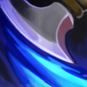

Anti-Mage is a fast melee agility hero with an emphasis on disrupting and killing high-mana enemies.
He has notably high agility and low base attack time, giving him high damage and scaling with his basic attacks. His signature ability is Mana Break,
a passive attack modifier that makes him a huge threat to mana-reliant heroes, mainly Intelligence-based casters.
In addition to granting substantial bonus damage on each attack, its mana burn sets enemies up to be devastated by his ultimate ability, Mana Void. Blink is a highly versatile ability that allows
Anti-Mage to instantly teleport short distances, thereby allowing him to escape, chase, and even farm with ease. Combined with his high base movement speed, this makes Anti-Mage a highly
mobile hero at all points in the game. Counterspell greatly increases Anti-Mage's magic resistance, allowing him to sustain more damage from enemy casters.
Finally, Mana Void finishes off targets after their mana has been burned, inflicting heavy damage to both the target and enemies surrounding the target. The damage Mana Void can potentially
deal scales extremely well into the late game, as enemies' mana pools only grow larger over time. His naturally fast basic attacks
combined with his powerful abilities make him extremely dangerous in the late game,
allowing him to devastate enemies with ease if he is allowed to farm as a hard carry.
Bio
Anti-Mage
"They who live by the wand shall die by my blade."
Lore:
The monks of Turstarkuri watched the rugged valleys below their mountain monastery as wave after wave of invaders swept through the lower kingdoms. Ascetic and pragmatic, in their remote monastic eyrie they remained aloof from mundane strife, wrapped in meditation that knew no gods or elements of magic. Then came the Legion of the Dead God, crusaders with a sinister mandate to replace all local worship with their Unliving Lord's poisonous nihilosophy. From a landscape that had known nothing but blood and battle for a thousand years, they tore the souls and bones of countless fallen legions and pitched them against Turstarkuri. The monastery stood scarcely a fortnight against the assault, and the few monks who bothered to surface from their meditations believed the invaders were but demonic visions sent to distract them from meditation. They died where they sat on their silken cushions. Only one youth survived--a pilgrim who had come as an acolyte, seeking wisdom, but had yet to be admitted to the monastery. He watched in horror as the monks to whom he had served tea and nettles were first slaughtered, then raised to join the ranks of the Dead God's priesthood. With nothing but a few of Turstarkuri's prized dogmatic scrolls, he crept away to the comparative safety of other lands, swearing to obliterate not only the Dead God's magic users--but to put an end to magic altogether.
Hero's Stats
Anti-Mage
Level
1
15
25
Health
660
1020
1280
Health Regen
2.55
4.37
5.67
Magic Res.
26.38%
27.47%
28.25%
Magic Res.
26.38%
27.47%
28.25%
Mana
219
519
735
Mana Regen
0.6
1.86
2.76
Spell damage
0.84%
2.6%
3.86%
Armor
2.84
10.01
15.13
Attack speed
219
519
735
damage
53-57
97-101
129-133
Talents
Hero Talents
-50s Mana Void Cooldown
Lvl-25
+25% Counterspell Magic Resistance
-2.5s Blink Cooldown
Lvl-20
Blink Uncontrollable Illusion
+15 Agility
Lvl-15
+400 Blink Cast Range
+20 Attack Speed
Lvl-10
+10 Strength
Abilities
Mana Break - Q

Burns an opponent's mana on each attack. Mana Break deals 50% of the mana burned as damage to the target.
Ability
Affects
Damage
Passive
Enemies
Physical
Mana Burned per Hit: 28/40/52/64
Burned Mana as Damage: 50%
A modified technique of the Turstarkuri monks' peaceful ways is to turn magical energies on their owner.
Blink - W
Short distance teleportation that allows Anti-Mage to move in and out of combat.
Ability
Affects
Target point
Self
Cast Animation: 0.4+0.53
Cast Range: Global
Max Blink Distance: 925/1000/1075/1150
In his encounter with the Dead Gods, Anti-Mage learned the value of being elusive.
Counterspell - E
Passively grants you magic resistance. Can be activated to create an anti-magic shell around you that sends any targeted spells back towards enemies instead of affecting you.
Ability
Affects
No Target
Self
Cast Animation: 0+0
Magic Resistance Bonus: 15%/25%/35%/45%
Shell Duration: 1.2
Mana Void - R
For each point of mana missing by the target unit, damage is dealt to it and surrounding enemies. The main target is also mini-stunned.
Ability
Affects
Damage
Target Unit
Enemies
Magical
Cast Animation: 0.3+0.63
Cast Range: 600
Radius: 500
Damage per Missing Mana: 0.8/0.95/1.1
Kill Cooldown Increase: 0 (Upgradable by Aghanim's Scepter. 70)
Stun Duration: 0.3 (Upgradable by Aghanim's Scepter. 1.3)
After bringing enemies to their knees, Anti-Mage punishes them for their use of the arcane arts.
 Anti-Mage
Anti-Mage